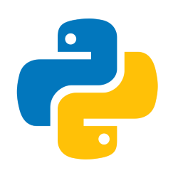
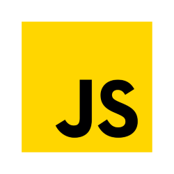

Meu nome é Nicolas Samuel Torino, nasci no dia 4 de Janeiro de de 2007 (18 anos) na cidade de Toledo no Paraná. Atualmete estudo na UTFPR cursando o curso de Sistemas para a Internet e também trabalho na Prati-Donaduzzi, mas ainda não na área de tecnologia.
Python
Javascript
Meus estilos de músicas dependem muito das fazes da vida que eu estou passando, mas no geral gosto muito de:
Eu tenho dois principais hobbies, leitura e corrida. A leitura é um hobbie relativamente novo para mim, comecei a criar o hábito da leitura ano passado mais precisamente em novembro de 2024, onde escolhi como primeiro livro para ler, a Biografia do Steve Jobs (péssima escolha para quem está tentando começar a ler é escolher um livro com mais de 600 páginas). Já a corrida ela é um pouco mais velha na vida, sempre fui um cara do esporte, portanto sempre estive me movimentando, seja jogando futebol, praticando musculação, andando de bicicleta, por isso ela foi mais fácil de se iniciar, comecei a levar ela mais a sério em julho de 2024. Adoro correr, a corrida para mim é quase uma terapia, um momento comigo mesmo, um tempo com os meus pensamentos
Instagram: nicolastorino__
Gmail: nicolastorino@alunos.utfpr.edu.br